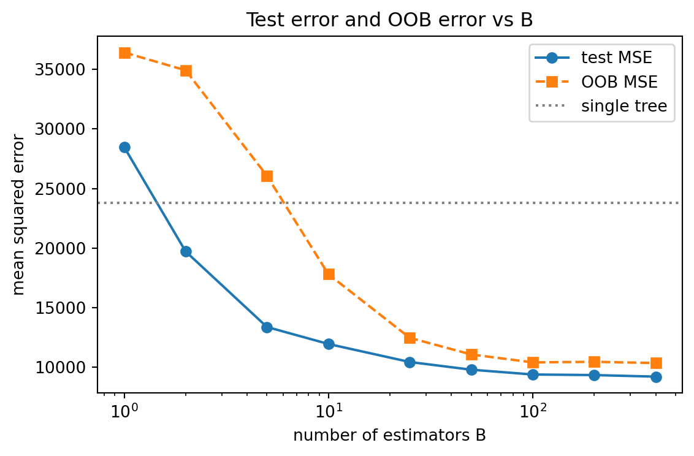
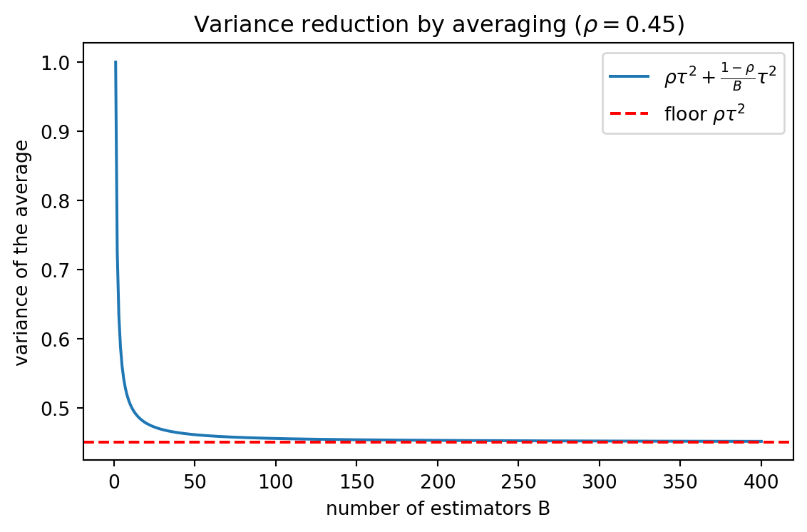

flowchart LR
D[Original set D, n points] --> R[Draw n times with replacement]
R --> IN[In-bag, about 63.2 percent of distinct points]
R --> OUT[Out-of-bag, about 36.8 percent held out]
IN --> T[Train model b]
OUT --> V[Validate model b on these points]
106 Bagging: Bootstrap Aggregation
Bagging, short for bootstrap aggregation, is one of the foundational ensemble methods in machine learning. Introduced by Leo Breiman in 1996, it offers a simple recipe for turning an unstable predictor into a more reliable one. The core idea is deceptively plain: train many copies of the same learning algorithm on slightly different versions of the data, then combine their outputs by averaging or voting. The statistical payoff is a reduction in variance without a meaningful increase in bias. This chapter develops the method from its probabilistic roots, explains why and when it works, and connects the theory to practical concerns such as out-of-bag estimation and parallel training.
106.1 1. The Bootstrap
106.1.1 1.1 Resampling from the Empirical Distribution
The bootstrap, due to Bradley Efron, is a resampling technique for approximating the sampling distribution of a statistic. Suppose we have a training set \(\mathcal{D} = \{(x_1, y_1), \dots, (x_n, y_n)\}\) drawn independently from some unknown distribution \(P\). A bootstrap sample \(\mathcal{D}^{*}\) is formed by drawing \(n\) examples from \(\mathcal{D}\) uniformly at random with replacement. Because sampling is done with replacement, some original points appear multiple times in \(\mathcal{D}^{*}\) while others are absent.
The bootstrap treats the empirical distribution \(\hat{P}_n\), which places mass \(1/n\) on each observed point, as a stand in for the true distribution \(P\). Drawing a bootstrap sample is exactly the act of sampling \(n\) points i.i.d. from \(\hat{P}_n\). The hope is that the variability of a statistic computed across many bootstrap samples mimics the variability we would see if we could repeatedly draw fresh datasets from \(P\).
106.1.2 1.2 The Probability a Point Is Left Out
A useful quantity is the chance that a given training point fails to appear in a particular bootstrap sample. For a fixed point, the probability it is not chosen on any single draw is \(1 - 1/n\). Across \(n\) independent draws,
\[ \Pr(\text{point omitted}) = \left(1 - \frac{1}{n}\right)^{n} \xrightarrow{n \to \infty} e^{-1} \approx 0.368. \]
The limit follows from \(\left(1 - \tfrac{1}{n}\right)^{n} = \exp\!\big(n \ln(1 - \tfrac{1}{n})\big)\) and the expansion \(\ln(1 - \tfrac{1}{n}) = -\tfrac{1}{n} - \tfrac{1}{2n^2} - \cdots\), so the exponent tends to \(-1\). Let \(K_i\) count how many of the \(n\) draws select a fixed point \(i\). Then \(K_i \sim \text{Binomial}(n, 1/n)\), which converges to a \(\text{Poisson}(1)\) distribution, and \(\Pr(K_i = 0) = e^{-1}\) recovers the same constant.
So each bootstrap sample contains, on average, roughly 63.2 percent of the distinct original points, and about 36.8 percent are held out. These held out points will reappear shortly when we discuss out-of-bag estimation. They are a free validation set hiding inside the resampling scheme. The diagram below traces a single original point through one bootstrap round.
A short symbolic and numeric check confirms the constant and shows how fast the finite \(n\) value approaches the limit.
Code
import numpy as np
import pandas as pd
import sympy as sp
import matplotlib.pyplot as plt
from sklearn.datasets import make_regression
from sklearn.tree import DecisionTreeRegressor
from sklearn.ensemble import BaggingRegressor
from sklearn.metrics import mean_squared_error
from sklearn.model_selection import train_test_split
rng = np.random.default_rng(0)
# --- SymPy / numeric check of the 1 - 1/e out-of-bag fraction ---
n = sp.symbols("n", positive=True)
omit_expr = (1 - 1 / n) ** n
limit_omit = sp.limit(omit_expr, n, sp.oo)
print("=== OOB fraction (1 - 1/e) check ===")
print("symbolic lim (1-1/n)^n =", limit_omit)
print(f"e^-1 numeric = {float(sp.exp(-1)):.6f}")
for nval in [10, 100, 1000, 10000]:
p_omit = (1 - 1 / nval) ** nval
print(f" n={nval:5d}: P(omitted)={p_omit:.6f}, P(in-bag)={1-p_omit:.6f}")
# Monte Carlo confirmation of the in-bag fraction for one bootstrap draw
n_mc = 2000
draws = rng.integers(0, n_mc, size=n_mc)
frac_in = len(np.unique(draws)) / n_mc
print(f"Monte Carlo in-bag fraction (n={n_mc}): {frac_in:.4f} "
f"(theory {1 - np.exp(-1):.4f})")=== OOB fraction (1 - 1/e) check ===
symbolic lim (1-1/n)^n = exp(-1)
e^-1 numeric = 0.367879
n= 10: P(omitted)=0.348678, P(in-bag)=0.651322
n= 100: P(omitted)=0.366032, P(in-bag)=0.633968
n= 1000: P(omitted)=0.367695, P(in-bag)=0.632305
n=10000: P(omitted)=0.367861, P(in-bag)=0.632139
Monte Carlo in-bag fraction (n=2000): 0.6280 (theory 0.6321)The symbolic limit returns \(e^{-1}\) exactly, and the finite \(n\) rows show the convergence is already tight by \(n = 100\). The Monte Carlo draw lands near the theoretical 63.2 percent in-bag fraction, exactly as predicted.
106.2 2. Aggregating Predictors
106.2.1 2.1 The Bagging Algorithm
Let \(\phi(x; \mathcal{D})\) denote a base learner trained on dataset \(\mathcal{D}\) and evaluated at input \(x\). Bagging draws \(B\) bootstrap samples \(\mathcal{D}^{*1}, \dots, \mathcal{D}^{*B}\), fits a model on each, and combines them. For regression the aggregate is an average,
\[ \phi_{\text{bag}}(x) = \frac{1}{B} \sum_{b=1}^{B} \phi(x; \mathcal{D}^{*b}), \]
and for classification it is typically a majority vote across the \(B\) class predictions, or an average of predicted class probabilities followed by an argmax. The procedure is summarized below.
Input: training set D, base learner phi, number of models B
for b = 1 to B:
D_b = bootstrap_sample(D) # n draws with replacement
model_b = train(phi, D_b)
return aggregator over {model_1, ..., model_B}The number of bootstrap rounds \(B\) is a computational budget rather than a parameter that needs careful tuning. More models never increase the variance of the ensemble estimate of the aggregate, and performance plateaus once \(B\) is large enough, often a few hundred for typical problems.
106.2.2 2.2 The Idealized Aggregate
To understand the benefit, imagine for a moment that we could draw fresh independent datasets from \(P\) rather than bootstrap samples. Define the idealized aggregated predictor as the expectation over training sets,
\[ \phi_{\text{agg}}(x) = \mathbb{E}_{\mathcal{D}}\big[\phi(x; \mathcal{D})\big]. \]
This is the predictor bagging is trying to approximate. Real bagging substitutes the empirical distribution for \(P\) and a finite \(B\) for the expectation, so \(\phi_{\text{bag}}\) is a Monte Carlo estimate of \(\phi_{\text{agg}}\) computed on resampled data. The gap between the two is the price of having only a finite sample.
106.3 3. Variance Reduction by Averaging
106.3.1 3.1 The Bias Variance Decomposition
Consider squared error regression with a target \(y = f(x) + \varepsilon\) where \(\mathbb{E}[\varepsilon] = 0\) and \(\operatorname{Var}(\varepsilon) = \sigma^2\). The expected prediction error of a learner at a point \(x\) decomposes into three pieces,
\[ \mathbb{E}\big[(y - \phi(x; \mathcal{D}))^2\big] = \underbrace{\sigma^2}_{\text{irreducible}} + \underbrace{\big(f(x) - \mathbb{E}_{\mathcal{D}}[\phi(x;\mathcal{D})]\big)^2}_{\text{bias}^2} + \underbrace{\operatorname{Var}_{\mathcal{D}}\big(\phi(x;\mathcal{D})\big)}_{\text{variance}}. \]
The idealized aggregate \(\phi_{\text{agg}}\) has the same bias as a single learner, since averaging over training sets does not change the mean prediction. What it changes is the variance term. By construction \(\phi_{\text{agg}}(x)\) is a constant with respect to the random draw of \(\mathcal{D}\), so its variance is zero. Replacing \(\phi\) with \(\phi_{\text{agg}}\) removes the variance component entirely while leaving the squared bias untouched. This is the theoretical best case that bagging chases.
106.3.2 3.2 Correlation Limits the Gain
In practice we average \(B\) predictors that are not independent, because every bootstrap sample is drawn from the same training set. Suppose each base predictor has variance \(\tau^2\) and any two of them have pairwise correlation \(\rho\), so \(\operatorname{Cov}(\phi_a, \phi_b) = \rho \tau^2\) for \(a \ne b\). Expanding the variance of the mean separates the \(B\) diagonal terms from the \(B(B-1)\) off diagonal covariances,
\[ \operatorname{Var}\!\left(\frac{1}{B}\sum_{b=1}^{B}\phi_b\right) = \frac{1}{B^2}\left[\sum_{b=1}^{B}\operatorname{Var}(\phi_b) + \sum_{a \ne b}\operatorname{Cov}(\phi_a,\phi_b)\right] = \frac{1}{B^2}\Big[B\tau^2 + B(B-1)\rho\tau^2\Big]. \]
Collecting terms gives the standard result,
\[ \operatorname{Var}\!\left(\frac{1}{B}\sum_{b=1}^{B}\phi_b\right) = \rho\,\tau^2 + \frac{1 - \rho}{B}\,\tau^2. \]
As \(B\) grows the second term vanishes and the variance approaches \(\rho \tau^2\). The lesson is sharp. Adding more models drives down only the portion of variance attributable to the independent fluctuation between models. The floor \(\rho \tau^2\) is set by how correlated the base learners are. This single equation explains why random forests extend bagging with random feature subsampling at each split: the extra randomization lowers \(\rho\), pushing the achievable variance floor down further than bagging alone can reach.
106.3.3 3.3 Why Averaging Does Not Hurt Bias Much
For convex loss functions, Jensen’s inequality guarantees that the loss of the aggregated predictor is no worse than the average loss of the individual predictors. For squared error this is exact and gives a clean variance reduction. For zero one classification loss the picture is more subtle, because voting is not an averaging operation in the loss space. Bagging a classifier can occasionally make a good classifier slightly worse, but for unstable classifiers the variance reduction usually dominates. Breiman characterized the effect by contrasting order correct predictors, whose aggregate approaches the Bayes classifier, with predictors whose errors are systematic, where bagging offers little help.
106.4 4. When Bagging Helps
106.4.1 4.1 Instability Is the Key Property
Bagging helps precisely when the base learner is unstable, meaning small perturbations of the training data produce large changes in the fitted model. Formally, a learner is unstable if \(\operatorname{Var}_{\mathcal{D}}(\phi(x; \mathcal{D}))\) is large relative to its bias. Unstable learners have variance to spare, and bagging converts that variance into accuracy.
Classic unstable learners include:
- Decision trees, especially deep trees grown to low impurity, where a single changed split near the root reshapes the entire tree.
- Neural networks, whose nonconvex optimization lands in different minima under data perturbation.
- Subset selection in linear regression, where the chosen variables flip readily.
Stable learners gain little or nothing. The \(k\) nearest neighbors rule is the canonical example. Its predictions barely move when a few training points are duplicated or dropped, so \(\rho\) is near one and the averaging in section 3.2 buys almost nothing. Bagging a stable learner wastes computation and can even degrade accuracy through the loss of effective sample size in each bootstrap draw.
106.4.2 4.2 A Mental Model for Deciding
The practical heuristic is to ask whether the variance term is large. If cross validated performance swings widely across folds, or if retraining on slightly different data yields visibly different models, bagging is a promising remedy. If the model is already low variance and high bias, the better move is to reduce bias, for example with a more expressive base learner or with boosting, which is the bias reducing counterpart to bagging.
high variance, low bias -> bag it (or use a random forest)
low variance, high bias -> boost it or enrich the model
high variance, high bias -> fix the model class first106.4.3 4.3 Trees as the Natural Partner
Decision trees pair so well with bagging that the combination spawned random forests, one of the most widely used off the shelf methods. Trees are high variance and low bias when grown deep, they handle mixed feature types and nonlinearities without preprocessing, and they are cheap to fit. Bagging supplies the variance reduction the trees lack, and because each tree is grown to full depth without pruning, the ensemble keeps low bias while shedding variance.
106.5 5. Out-of-Bag Estimation
106.5.1 5.1 Free Validation from the Held Out Points
Recall that each bootstrap sample omits about 36.8 percent of the original points. For a given training point \((x_i, y_i)\), the set of models whose bootstrap sample excluded it is called its out-of-bag, or OOB, ensemble. Those models never saw \(x_i\) during training, so their combined prediction on \(x_i\) is an honest held out prediction.
Formally, let \(B_i = \{ b : (x_i, y_i) \notin \mathcal{D}^{*b} \}\) be the indices of models for which point \(i\) was out of bag. The OOB prediction is
\[ \hat{y}_i^{\text{oob}} = \operatorname{aggregate}\big( \{ \phi(x_i; \mathcal{D}^{*b}) : b \in B_i \} \big), \]
and the out-of-bag error is the average loss of these predictions over all \(n\) training points,
\[ \text{err}_{\text{oob}} = \frac{1}{n} \sum_{i=1}^{n} L\big(y_i, \hat{y}_i^{\text{oob}}\big). \]
106.5.2 5.2 Why It Works and What to Watch
The OOB error approximates the generalization error of the bagged ensemble without a separate validation set or a cross validation loop, which makes it nearly free since it reuses models already trained. As \(B\) grows, each point accumulates predictions from roughly \(0.368 B\) models, so for moderate to large \(B\) the OOB estimate stabilizes and tracks test error closely.
Two caveats deserve attention. First, when \(B\) is small, some points may have very few OOB models, making the per point estimate noisy. Second, the OOB error estimates the error of an ensemble built from about \(0.368 B\) models per point rather than the full \(B\) model ensemble, so it is mildly conservative; the bias shrinks as \(B\) increases. The OOB error can also double as a tuning signal, for instance to choose tree depth or the number of features sampled per split, though heavy reliance on it for tuning reintroduces a mild selection bias.
106.5.3 5.3 OOB Error as a Validation Estimate
Why is the OOB average an unbiased estimate of generalization error? Fix a point \((x_i, y_i)\). The models in \(B_i\) were each trained on a bootstrap sample that did not contain that point, so their prediction \(\hat{y}_i^{\text{oob}}\) is statistically independent of \(y_i\). Each per point OOB loss \(L(y_i, \hat{y}_i^{\text{oob}})\) is therefore a genuine out of sample loss, of the same kind a held out test point would supply. Averaging over all \(n\) points,
\[ \mathbb{E}\big[\text{err}_{\text{oob}}\big] = \frac{1}{n}\sum_{i=1}^{n}\mathbb{E}\big[L(y_i, \hat{y}_i^{\text{oob}})\big] \approx \mathbb{E}_{(x,y)}\big[L(y, \phi_{\text{bag}}(x))\big], \]
which is the generalization error of an ensemble of roughly \(0.368 B\) models. As \(B \to \infty\) each point still has \(\approx 0.368 B \to \infty\) contributing models, so the OOB ensemble matches the full ensemble and the estimate becomes essentially unbiased for the test error. The experiment below confirms that the OOB MSE curve tracks the held out test MSE as \(B\) grows.
106.5.4 5.4 A Worked Bagging Experiment
We fit unpruned regression trees, the canonical unstable learner, and bag them for an increasing number of estimators \(B\). The setup logs the held out test error and the OOB error side by side and reports how many times better the ensemble is than a single tree.
Code
import warnings
# --- Dataset ---
X, y = make_regression(n_samples=600, n_features=12, n_informative=8,
noise=12.0, random_state=0)
Xtr, Xte, ytr, yte = train_test_split(X, y, test_size=0.3, random_state=0)
# --- Test error and OOB error vs number of estimators ---
base = DecisionTreeRegressor(max_depth=None, random_state=0)
Bs = [1, 2, 5, 10, 25, 50, 100, 200, 400]
single = DecisionTreeRegressor(max_depth=None, random_state=0).fit(Xtr, ytr)
single_mse = mean_squared_error(yte, single.predict(Xte))
rows = []
for B in Bs:
bag = BaggingRegressor(estimator=base, n_estimators=B,
oob_score=True, bootstrap=True,
n_jobs=-1, random_state=0)
with warnings.catch_warnings(): # small B leaves a few points unscored
warnings.simplefilter("ignore")
bag.fit(Xtr, ytr)
test_mse = mean_squared_error(yte, bag.predict(Xte))
oob_mse = np.var(ytr) * (1 - bag.oob_score_) # R^2 -> MSE on train targets
rows.append({"B": B,
"test_mse": round(test_mse, 1),
"oob_mse": round(oob_mse, 1),
"x_vs_single": round(single_mse / test_mse, 3)})
results = pd.DataFrame(rows)
print("=== Bagging error vs number of estimators ===")
print(results.to_string(index=False))
print(f"\nSingle unpruned tree test MSE: {single_mse:.1f}")
best = results.loc[results["test_mse"].idxmin()]
print(f"Best test MSE at B={int(best['B'])}: {best['test_mse']:.1f} "
f"({best['x_vs_single']:.2f}x better than one tree)")=== Bagging error vs number of estimators ===
B test_mse oob_mse x_vs_single
1 28481.1 36420.3 0.836
2 19714.5 34922.2 1.207
5 13377.1 26065.2 1.779
10 11949.8 17802.1 1.992
25 10437.9 12466.8 2.280
50 9792.0 11071.2 2.430
100 9390.0 10406.0 2.534
200 9341.3 10454.7 2.548
400 9209.8 10352.2 2.584
Single unpruned tree test MSE: 23798.5
Best test MSE at B=400: 9209.8 (2.58x better than one tree)The test error falls steeply from \(B = 1\) and flattens past \(B \approx 100\), exactly the plateau the theory predicts. The OOB error sits slightly above the test error at small \(B\), because each point is then scored by very few models, and converges toward it as \(B\) grows.
Code
# --- Figure 1: test error and OOB error vs B ---
fig1, ax1 = plt.subplots(figsize=(6, 4))
ax1.plot(results["B"], results["test_mse"], "o-", label="test MSE")
ax1.plot(results["B"], results["oob_mse"], "s--", label="OOB MSE")
ax1.axhline(single_mse, color="gray", ls=":", label="single tree")
ax1.set_xlabel("number of estimators B")
ax1.set_ylabel("mean squared error")
ax1.set_xscale("log")
ax1.set_title("Test error and OOB error vs B")
ax1.legend()
fig1.tight_layout()
plt.show()
Code
# --- Figure 2: theoretical variance of the average vs B ---
tau2, rho = 1.0, 0.45
Bgrid = np.arange(1, 401)
var_curve = rho * tau2 + (1 - rho) / Bgrid * tau2
fig2, ax2 = plt.subplots(figsize=(6, 4))
ax2.plot(Bgrid, var_curve, "-",
label=r"$\rho\tau^2+\frac{1-\rho}{B}\tau^2$")
ax2.axhline(rho * tau2, color="red", ls="--", label=r"floor $\rho\tau^2$")
ax2.set_xlabel("number of estimators B")
ax2.set_ylabel("variance of the average")
ax2.set_title(r"Variance reduction by averaging ($\rho=0.45$)")
ax2.legend()
fig2.tight_layout()
print(f"Variance floor rho*tau^2 = {rho*tau2:.3f}; "
f"at B=400 variance = {var_curve[-1]:.4f}")
plt.show()Variance floor rho*tau^2 = 0.450; at B=400 variance = 0.4514
Figure 2 plots the variance law from section 3.2. The curve drops quickly and then presses against the floor \(\rho \tau^2\), the visual counterpart of the diminishing returns seen in the error table: once the independent fluctuation is averaged away, only the correlated floor remains.
106.6 6. Parallel Training
106.6.1 6.1 Embarrassingly Parallel Structure
A defining practical virtue of bagging is that the \(B\) models are statistically independent given the bootstrap samples, and their training has no sequential dependency. Each model can be fit on a separate core, machine, or accelerator with no communication during training. This is in sharp contrast to boosting, where model \(b\) depends on the residuals or weights left by model \(b-1\) and must be trained in sequence.
# conceptual parallel map, no inter-model communication
models = parallel_map(lambda b: train(phi, bootstrap_sample(D)),
range(B))
predict = aggregate(models)The only synchronization points are the initial broadcast of the training data and the final collection of fitted models. Memory can be shared since bootstrap sampling can be represented as a vector of integer counts or indices rather than a physical copy of the data, which keeps the footprint close to a single copy of \(\mathcal{D}\) plus the models.
106.6.2 6.2 Scaling and Inference Cost
Training scales nearly linearly with the number of workers until the broadcast and collection overhead dominates, which for large datasets happens only at high worker counts. Prediction is also parallel, since each model scores the input independently before aggregation. The cost to keep in mind is that inference now requires evaluating all \(B\) models, so latency and memory at serving time grow linearly in \(B\). When this matters, practitioners cap \(B\) at the point where OOB error flattens, or distill the ensemble into a single compact model.
106.7 7. Summary
Bagging reduces variance by averaging predictors trained on bootstrap resamples of the data. The bootstrap supplies diverse training sets from a single dataset, averaging collapses the independent portion of model variance toward a floor set by inter model correlation \(\rho\), and the held out 36.8 percent of points yields a nearly free out-of-bag estimate of generalization error. The method delivers most when the base learner is unstable and high variance, which is why it pairs so naturally with deep decision trees and underpins random forests. Its embarrassingly parallel structure makes it cheap to scale across cores and machines. The main limitations are a variance floor that pure resampling cannot pierce, negligible help for stable or high bias learners, and an inference cost that grows with the ensemble size.
106.8 8. Implementations in Other Languages
The core of bagging is a bootstrap resample followed by averaging. The Python tab is executable above and uses the open source scikit-learn library; the Julia and Rust tabs are reference implementations of the same resample and average logic for a regression ensemble of trees or stumps.
Code
# A from-scratch bagging regressor, no ensemble helper
def bag_fit_predict(Xtr, ytr, Xte, B=100, seed=0):
g = np.random.default_rng(seed)
n = len(Xtr)
preds = np.zeros((B, len(Xte)))
for b in range(B):
idx = g.integers(0, n, size=n) # bootstrap indices
tree = DecisionTreeRegressor(max_depth=None, random_state=b)
tree.fit(Xtr[idx], ytr[idx])
preds[b] = tree.predict(Xte)
return preds.mean(axis=0) # aggregate by averaging
scratch = bag_fit_predict(Xtr, ytr, Xte, B=100)
print("Scratch bagging test MSE:",
round(mean_squared_error(yte, scratch), 1))Scratch bagging test MSE: 8957.5using DecisionTree, Statistics, Random
function bag_fit_predict(Xtr, ytr, Xte; B=100, seed=0)
rng = MersenneTwister(seed)
n = size(Xtr, 1)
preds = zeros(B, size(Xte, 1))
for b in 1:B
idx = rand(rng, 1:n, n) # bootstrap indices
tree = DecisionTreeRegressor(max_depth=-1)
fit!(tree, Xtr[idx, :], ytr[idx])
preds[b, :] = predict(tree, Xte)
end
return vec(mean(preds, dims=1)) # aggregate by averaging
end
yhat = bag_fit_predict(Xtr, ytr, Xte; B=100)
println("Scratch bagging MSE: ", mean((yhat .- yte) .^ 2))// Bagging by averaging the mean response of bootstrap resamples
// (a degenerate depth-0 base learner) to show the resample/aggregate core.
use rand::Rng;
fn bag_predict(ytr: &[f64], b: usize, seed: u64) -> f64 {
let mut rng = rand::rngs::StdRng::seed_from_u64(seed);
let n = ytr.len();
let mut acc = 0.0;
for _ in 0..b {
// one bootstrap resample, base learner = sample mean
let mut s = 0.0;
for _ in 0..n {
s += ytr[rng.gen_range(0..n)];
}
acc += s / n as f64;
}
acc / b as f64 // aggregate by averaging
}
fn main() {
let ytr = vec![3.0, 1.0, 4.0, 1.0, 5.0, 9.0, 2.0, 6.0];
println!("{}", bag_predict(&ytr, 100, 0));
}106.9 References
- Breiman, L. (1996). Bagging Predictors. Machine Learning, 24(2), 123 to 140. DOI: 10.1007/BF00058655
- Breiman, L. (2001). Random Forests. Machine Learning, 45(1), 5 to 32. DOI: 10.1023/A:1010933404324
- Efron, B. (1979). Bootstrap Methods: Another Look at the Jackknife. The Annals of Statistics, 7(1), 1 to 26. DOI: 10.1214/aos/1176344552
- Efron, B., and Tibshirani, R. (1993). An Introduction to the Bootstrap. Chapman and Hall. DOI: 10.1201/9780429246593
- Hastie, T., Tibshirani, R., and Friedman, J. (2009). The Elements of Statistical Learning, 2nd ed. Springer. DOI: 10.1007/978-0-387-84858-7
- Buhlmann, P., and Yu, B. (2002). Analyzing Bagging. The Annals of Statistics, 30(4), 927 to 961. DOI: 10.1214/aos/1031689014
- Pedregosa, F., et al. (2011). Scikit-learn: Machine Learning in Python. Journal of Machine Learning Research, 12, 2825 to 2830. URL: https://jmlr.org/papers/v12/pedregosa11a.html